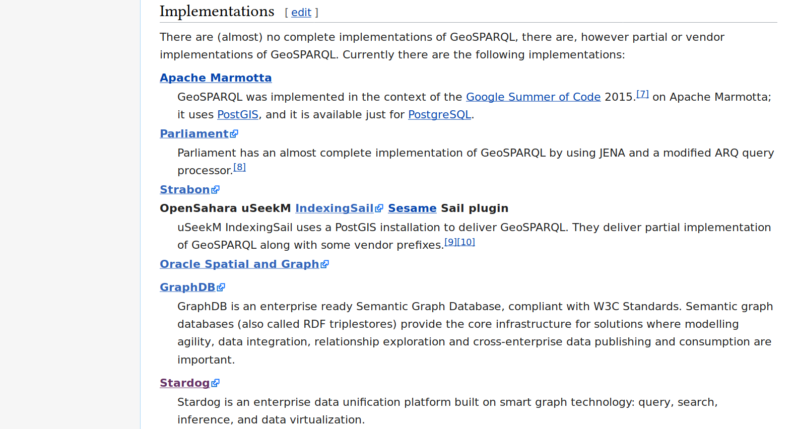
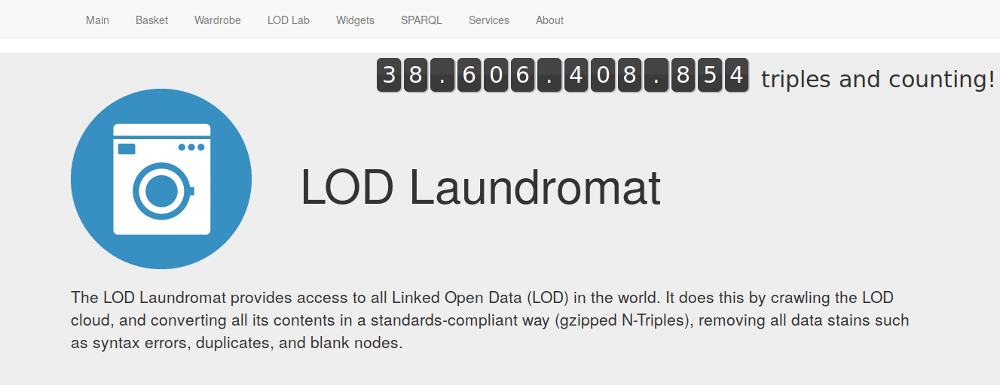
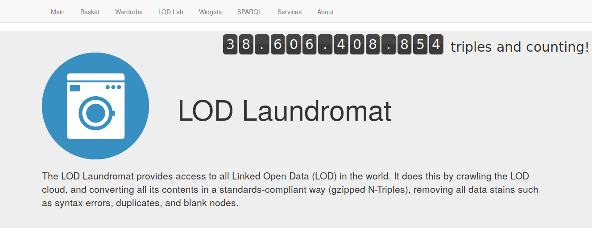

Data on the Web Community Event


Sustainability pitfalls
- Developsment stalls (FOSS)
- Breaking changes without upgrade path (FOSS)
- Vendor lock-in
- Be part of the FOSS community (e.g. hdt-cpp)
- Be part of the LOD community (e.g. PLDN)
- Support contracts
Sustainable development
- Continuous Integration (CI)
- Regression tests & unit tests
- Modularity (bijv.)
- Container “a box that works” (e.g. Docker)
- Instant utility (out-of-the-box)
‘Blind spots’
- GeoSPARQL (PLDN working group)
- Educational material & elevator pitch
- User Interface (UI) & User eXperience (UX)
- Data streaming
- Privacy, provenance, quality & trust
- Open + non-Open data
- Entity linking

Properties of Cadastral Big Data
- Over 1,000,000,000 graph edges
- Over 100,000,000 geo shapes
- Precision
- Performance
Implementations of GeoSPARQL

GeoSPARQL: Executive summary
- Only few implementations to choose
from.
- FOSS implementations do not
perform.
- Commercial vendors cannot deliver
an open endpoint.
- Commercial solutions do not work
out-of-the-box.
“Nobody has complained about this before”
 

{kind=link}
{kind=link}